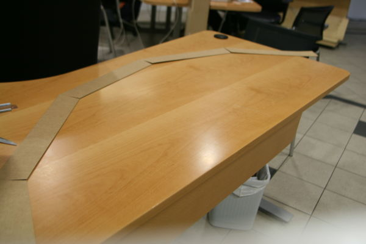

Gísli
Gísli
Other things
Replica of A rounded window.
My family is changing all our wooden window frames to plastic and this
window is the most complicated of them all because it's rounded.
This is
A model of A window that I did to make "the plastic window builders"
work easier, to realise the angles and degrees.
Evry one of the 5 have diffrent angles so I needed to ree measure them
and make evry one with the same angles.
So I made this in about
15minutes and documented it just to show another aspect of Fab Labs
uses.

Jewellery Tree
 This is A jewellery tree that I made for my syster and the
bottom is made of wood, but I also have a version that has not A
bottom, it stands on it's own legs that are bit wider.
This is A jewellery tree that I made for my syster and the
bottom is made of wood, but I also have a version that has not A
bottom, it stands on it's own legs that are bit wider.